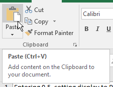
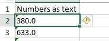
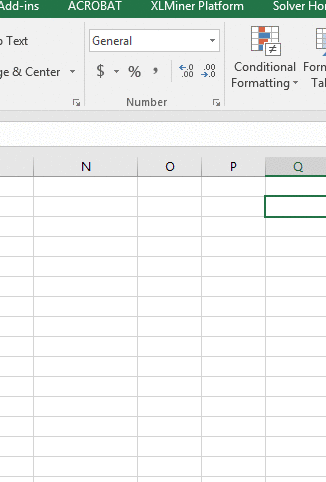
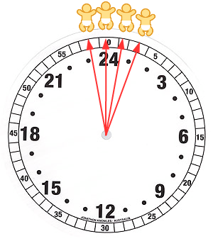

Spreadsheet calculations
Today we will start digging into use of formulas and functions in Excel. We'll also learn to nest functions, which means to use the output of one function as the input for another, using the example of calculating the mean of measurements from a circular variable (i.e. directions). We will learn about relative and absolute cell references, and how to use them to make complex, repetitive calculations easier. The way formulas and functions work depends on the data types we are working, so we will also take the opportunity to start learning how Excel handles data types.
1. Cell formulas
Download this file and save it to OneDrive (or your H drive, if OneDrive isn't behaving itself).
Formulas are entries in cells that perform some sort of operation. Cell formulas start with an = followed by cell references, arithmetic operators, or functions - we used them to calculate random numbers earlier this semester.
Functions are built-in mini programs that return a value. We have used these too, when we used =now() to return the system time, which we used as the seed for our random number generator.
But, what we have done so far is just the tip of the iceberg - formulas and functions are the primary reason to use Excel rather than a database management system, and we will be using them extensively for the rest of the semester. Today you will learn a little more about how they work, and how you can use combine them together to do complex computations in a single cell.
We will use the example of mutation-selection balance to begin to learn about how to do calculations in Excel.
Background: mutation-selection balance
Genetic diseases can be horrific things - they cause terrible suffering, which is only made worse by the fact that they are passed on from parent to offspring. Most genetic diseases are caused by mutations that disable a gene that performs a crucial function in the body. Loss of function mutations are usually recessive, meaning that a heterozygote does not express the disease (if you recall from Biol 212 or Biol 352, a heterozygote has two different alleles, in this case the disease-causing allele and a normal allele). Since heterozygotes do not express the disease they become carriers that can pass on their recessive, disease-causing allele to their offspring without even knowing they carry the allele. When recessive alleles are rare most of them will be in heterozygotes, which can greatly reduce the effectiveness of natural selection in removing the allele from the population.
This can be true even though the disease-causing allele is highly deleterious - even if everyone who has the disease dies in childhood, and thus never passes on the gene to offspring, the strong selection against those homozygotes has no effect on the copies of the allele in the heterozygous carriers, where most of the copies are found.
When the frequency of the allele gets low enough selection becomes so ineffective at removing the deleterious recessive alleles that mutations that re-create the disease allele are expected to restore the disease to the population as quickly as natural selection is removing it. At this point the allele has reached mutation-selection balance, where it will persist indefinitely.
Mutation-selection balance is theoretically expected to occur at:
where is the expected equilibrium frequency of the disease-causing allele, μ is the mutation rate (i.e. the probability of a mutation occurring at a particular gene locus per unit time), and s is the selection coefficient (i.e. the relative reduction in reproductive success that occurs due to the disease-causing allele when it is expressed in homozygotes).
Mutation rates vary, but the estimates that are usually used to predict mutation-selection balance fall between 1x10-4 and 1x10-6 - that is, 1 in 10,000 to 1 in 1,000,000. The selection coefficient varies a lot depending on the disease, but one that kills in childhood would have a selection coefficient of 1 (or 100% reduction in reproduction). Diseases that are not fatal, or that kill later in life (often after a homozygote knows that they have the disease and have had offspring already) will have a much smaller selection coefficient, closer to 0.
If we want to understand what kind of persistent allele frequencies to expect for recessive genetic diseases under mutation-selection balance, we would need to calculate for various combinations of μ and s. This would be cumbersome to do one set of values at a time, but by using cell references in Excel we can do them quickly and easily using formulas with cell references.
There are two types of cell reference, relative and absolute.
Relative cell references in cell formulas
Open the file you just downloaded, and switch to the tab called Cell references. You'll see that I already laid
out a matrix with mutation rates ranging from the low end of expected values (1x10-6) to the high end
(1x10-4) as row labels in column B, and selection differentials ranging from 0.1 (which is a 10%
reduction in reproductive output) to 1 (which is 100% reduction in reproductive output) as column labels in row
5.
Relative cell references are interpreted by Excel relative to the position of the cell that holds the formula. As an example:
- Select cell C6
- Enter =b6
- Hit the ENTER key
You should now see that the value of cell B6, 1.00E-06, is now showing in cell C6 as 0.000001, which is the same number without the scientific notation (note that Excel is not case sensitive, but it's case preserving - meaning, it's happy to accept the lower-case b in the cell reference as equivalent to B, but it stores all cell reference column letters as upper case, and it converts the lower case to upper case automatically).
When you hit the ENTER key the selection moved down one row, so select C6 again and you'll see that when a formula is entered the result of the formula is displayed in the spreadsheet, but the formula itself is displayed in the formula bar (this is the box above the column letters - you should see it says =B6 when cell C6 is selected). When a cell only contains data then the display in the spreadsheet and the formula bar are the same - if you select cell C5 you'll see that the value 0.1 is displayed both in the spreadsheet and in the formula bar, so this cell just contains the number 0.1.
Back to cell C6 - the reference to B6 in this formula is a relative reference, which means that Excel interprets it as saying "the cell in the same row as this one, but one column to the left of this cell".
But, we don't want to just display the value of B6, we want to divide the mutation rate in B6 by the selection coefficient in C5, so we need to edit the cell formula we have already entered.
To edit the cell formula:
- Select cell C6
- Click in the formula bar, or double-clicking cell C6 - in either case, the cell is put in edit mode. In edit mode the cell formula shows in the spreadsheet, with any cell references color-coded to match highlighting around the cell that is referred to (that is, both the B6 reference in the formula and the border around cell B6 on the worksheet will be the same color)
- Change the cell formula to: =b6/c5 (note that when you enter c5 as a
reference it highlights the cell it refers to, which helps you ensure you're using the right cell in your
calculation)
- Hit ENTER
You should now have the ratio of the mutation rate from row 6 divided by the selection coefficient from column C in cell C6. Just like the reference to B6, C5 is a relative reference, so Excel is interpreting it as "the cell one row above but in the same column as this cell".
Because Excel interprets relative references relative to the position of the formula, when we copy and paste a cell with this formula to a different cell it will use the cell immediately to the left and above to do the calculations, rather than continuing to point specifically to cells B6 and C5.
This is a good time to be clear about what is meant by Copying and Pasting a cell.
To copy a cell you must first select it.
- Selecting a cell is done by left-clicking on a cell once, or moving to the cell using the arrow keys - you can't copy a cell while it's in edit mode, so you do not want to double click a cell to select it
- A range of cells that are touching on an edge can be selected by left-clicking once in a cell and dragging across a cell range
If you enter edit mode accidentally hit ENTER or click the red x to the left of the formula bar to get out of edit mode.
Once the cells you want to copy are selected you can copy the cells by:
- Right-clicking the selected cell (or anywhere in a selected range of cells) and choosing "Copy" from the pop-up menu.
- Using the keyboard combination CTRL+C
- Clicking the "Copy" button
in the button bar in the left end of the "Home" tab.
Pasting a copied cell is done by selecting the cell that will be the destination (if a range of cells were copied then selecting the upper-left corner of the destination range is sufficient), and then:
- Right-clicking and selecting "Paste" from the pop-up menu.
- Using the keyboard combination CTRL+V
- Clicking the "Paste" button in the button bar in the left end of the "Home" tab.
Select cell C6, copy it and paste it to cell D6, one column over. You should see the cell shows the result of the calculation, with is 0.0001 - this isn't obviously wrong, but if you look at the formula in cell D6 it's pointing to the wrong cells. Activate the cell for editing - Excel color codes the cell references, and matches them with highlighting around the cells referred to. You'll see this:
When the cell was copied and pasted from C6 to D6 the relative cell references stayed the same, which means that the first one still points one column to the left in the same row, and the second one points one row above in the same column - but, now the cell to the left is no longer the mutation rate in B6, it's the cell formula in cell C6. We want the column to change in the second reference, because we want the formulas to always use the selection coefficient of the column they're in, so the change in column from C to D in the second reference is good, but the change from B to C in the first is bad.
Let's do the same thing, but this time copy C6 and paste it to C7 - you'll see a cell value of 1.00, which is clearly wrong (we don't expect the frequency to go to 100%), and if you put the cell in edit mode you'll see:
We have a similar problem as before, this time with the row number in the second reference - copying and pasting the formula to the next row down updated the row number for the first reference so that it points to the mutation rate in the same row that the formula is in (good), but also moved the row number for the second reference so that it's no longer pointing to the selection coefficient for the column it's in (bad).
What we want is for the rows to change in the first reference but not the column, and for the columns to change in the second reference but not the row.
To make the cell formulas work this way we need to use absolute references.
Absolute cell references
Absolute references are pointers to a particular set of cells, and do not depend on the location of the formula - thus, absolute references stay the same if you copy and paste the formula to a different location. Absolute references are created by placing a $ in front of the column letter, row number, or both. Where you put the dollar sign depends on what you are trying to do in your formula.
A. To make the cell in C6 always point to column B in the first reference, and row 5 in the second:
- Double-click C6 to enable editing
- Change the formula to read =$b6/c$5 and hit ENTER
The cell value for C6 hasn't changed - there's no difference between a relative cell reference and an absolute cell reference until you copy and paste the cell someplace else.
Now that you have the correct formula in B6, copy and paste B6 to the rest of the cells in the matrix - that is:
- Copy cell B6
- Select cells B6 through L17 and paste
This will put the cell formula in every cell of the matrix, and all of them will be pointing to the correct values in column B and row 5.
B. This is not yet the final calculation of equilibrium allele frequency, though - to get that we need the square root of these ratios of mutation rate to selection coefficients.
We will use the sqrt() function to do this calculation:
- Double-click C6 to enable editing
- Change the formula to read =sqrt($B6/C$5)
The value should now show as 0.0032, which is the expected equilibrium allele frequency for an allele with a selection coefficient of 0.1 and a mutation rate of 1x10-6.
Remember that functions are little mini programs that perform an operation, based on the arguments we provide, and return a value that's shown as the cell value. The sqrt() function is a simple one, which takes a numeric value as its single argument and returns the square root of that number. We used a formula as the argument, which has the effect of doing the division first, and then passing the ratio of mutation rate/selection coefficient to the sqrt() function as its argument, and sqrt() then calculated the square root of the value.
The formula is complete now in cell C6, so copy and paste C6 to the rest of the cells in the matrix, and you'll get the expected allele frequencies for all of the combinations of mutation rate and selection coefficient.
C. We now have a matrix of equilibrium allele frequencies to interpret. A good way to help us interpret a large number of numeric values is to graph them, and a good graph type for a matrix like this is a surface plot.
- Select cells B5 through L17 - this is all of the calculations, as well as all the mutation rate and selection coefficient values
- Select the Insert tab, and then find the Waterfall, Funnell, Surface, Stock or Radar chart button and select a surface chart (this one)
You should now have a 3D surface chart, with mutation rate and selection coefficient on the two axes on the base (x and y), and the equilibrium allele frequencies that you calculated on the vertical (z) axis. You should see that the combination of a high mutation rate and low selection coefficient result in the highest allele frequency, and the combination of low mutation rate and high selection coefficient result in the lowest allele frequency.
Change the title to "Equilibrium allele frequencies", and add axis titles as Mutation rate, Selection coefficient, and Allele frequency (the numbers are really different for the axes, you should be able to tell which is which based on the numbers in the axis tick labels).
D. Another good way to put the allele frequencies into context is to calculate the expected frequency of disease from them. Since the disease is only expressed in homozygotes two of the disease causing alleles would need to come together - if the allele frequency is q then the probability that two randomly selected alleles from the population will both be disease causing is q x q, or q2. We'll just do this calculation for the highest expected allele frequency, in cell C17.
- In cell A21 enter the label "Frequency of disease" - this will be too wide for the column width, but if you
hit the "Wrap text" button
 the row
height will increase and the text will wrap around so you can see it all.
the row
height will increase and the text will wrap around so you can see it all. - In cell B21 enter the formula =c17^2
The frequency of homozygotes is expected to be the square of the frequency of the allele, so we are squaring the allele frequency in cell C17 - the caret symbol, ^, is used for exponents (this is what we could have used to take the square root of the ratio of mutation rate to selection differential, since ^0.5 is the same thing as sqrt()).
This tells us that the frequency of a disease that only reduces reproductive output by 10%, with a mutation rate on the high end of normal, would be 0.001, or about 1 in 1000 births. At the other end of the spectrum, with 100% reduction in reproduction and a low mutation rate the frequency of disease would be 0.0012, which is 0.00001, or 1 in 100,000 births.
But, none of the combinations of selection coefficient and mutation rate have an expected allele frequency of 0, so we don't expect selection to ever completely eliminate genetic diseases.
Nesting functions
Nesting functions refers to using one function's output as the input for another. Nesting functions greatly increases the sophistication of calculations that can be done in Excel, since we are able to use nested functions to do things that are not already built in to Excel.
To learn how to nest functions in Excel we will turn to data that represents measurements on a circular scale. Circular variables are continuous numbers that repeat, rather than extending to positive and/or negative infinity - examples include directions (measured in degrees or radians), days of the year, and time of day. In each case there is an arbitrary starting point (due north for directions, January 1 for days of the year, and midnight for time of day), and measurements increase until they reach a maximum (360 degrees, December 31, midnight) and then they start again.
You may remember from biostats that variables measured on a circular scale require special mathematical treatment. Even simple operations, like calculating averages, become complicated when working with circular variables.
We introduce circular variables in biostats, but don't learn how to work with them. Now that we're learning how to use Excel to do calculations, this is a perfect opportunity to learn how to handle circular variables in our data.
Direction data
Directions are (relatively) simple circular variables to work with because they are recorded as angles. Due north is at 0 degrees, and numbers increase clockwise - due East is at 90 degrees, due South is at 180 degrees, and due west is at 270 degrees. The numbers increase to 360, which is the same as 0 degrees - thus, north is actually both 360 and 0 degrees.
A classic example of directional data in biology would be data on movement directions in animals. Pigeons, for example, have a sense of direction such that if we covered the eyes of domestic pigeons, drove due south and released them we expect they would fly north toward home. This would give us directions that are clustered around 0/360 degrees, but because some of the directions are slightly to the west of north (big numbers, near 360) and others are slightly to the east (small numbers, close to 0) their simple average is near 180 degrees, in exactly the wrong direction - you can see this problem in the graph simulating circular data with an average near 0 (clicking "Randomize" gives you a new set of randomly generated directions). We will learn how to calculate average directions correctly to avoid this problem.
A. Switch to the blank worksheet called "Nesting functions". Then do the following:
- Enter the label "Directions" in cell A1
- In cells A2 through A5 enter the numbers 345, 350, 1, and 10 (one direction per row)
- In cell A7 type "Simple average"
- In cell A8 calculate the average of these numbers with the formula: =average(a2:a5)
Averaging the directions gives you a very wrong answer for the mean of 176.5 - nearly due south, which is about as wrong as possible.
We solve this problem by converting directions into vector components, averaging the components, and then converting them back to an average direction. Converting directions into components requires a little basic trigonometry - to review:

We can graph a direction equal to θ as a line segment (the red line a) starting at the origin of the graph and with the tip placed at the direction that's on the compass scale - the red line segment, a, in the illustration to the left is pointing to 45 degrees, which is northeast. We can then convert the direction into an x, y coordinate pair by recognizing that the red line segment is the hypotenuse of a right triangle formed with the y-axis as one of its sides. If the origin is at 0,0, then ax is the x-coordinate, and ay is the y-coordinate for the tip of the red arrow at the end of the line segment a. For a right triangle, we know that: sin(θ) = opposite/hypotenuse, which is ax/a. Since we don't have a distance, just a direction, it's convenient to set the length of a to 1, so that sin(θ) = ax/1 = ax. In other words, the sin of θ is the x component. cos(θ) = adjacent/hypotenuse, which is ay/a. With a set to 1, this becomes cos(θ) = ay, and the cos of θ is the y component. |
We can also calculate θ from ay and ax, because we know that:
tan(θ) = opposite/adjacent = ax/ay
Solving for θ is done by taking the arctangent of each side:
θ = atan(ax/ay)
Armed with this knowledge, to get a mean direction we just need to:
- Calculate the sin of each direction to get x-components
- Calculate the cos of each direction to get y-components
- Calculate an average of the x-components (sin's), and an average of the y-components (cos's)
- Calculate atan(average of sin's/average of cos's) to get the mean angle
Simple, no?
B. Calculate the sin of each direction. Excel has a sin() function built in, but it assumes that our directions are in radians, not degrees.
 If you remember from your math
classes, radians are units of distance around the circumference of a circle that has a radius of 1 (a
circle with a radius of 1 is called a unit circle). Since circumference of a circle is C =
2πr, when the radius (r) is set to 1 the circumference is 2π.
If you remember from your math
classes, radians are units of distance around the circumference of a circle that has a radius of 1 (a
circle with a radius of 1 is called a unit circle). Since circumference of a circle is C =
2πr, when the radius (r) is set to 1 the circumference is 2π.
If you started at 0 degrees and walked clockwise around a compass, like the one to the left, by the time you got to 90 degrees you would have walked 1/4 of the way around the circle. With a circumference of 2π this is equivalent to 2π/4 = π/2 radians.
Continuing the walk, when you arrive at 180 degrees you would have walked halfway, or 2π/2 = π radians.
By the time you arrive at 270 degrees you would have walked 3/4 of the way, or 3(2π)/4 = 3π/2 radians.
When you arrive at 360 degrees you would have walked 2π radians.
So, there is a one to one correspondence between degrees and radians, and we just need to use Excel's radians() function to do the conversion for us.
- In cell B1 type "Direction in radians"
- In cell B2 type =radians(a2). You'll get an answer of 6.0213... for the first direction of 345
- Copy and paste the value from B2 to B3 through B5 - you will now have the directions in radians for all of the directions in column B
Next we can calculate the sin of these directions in radians:
- Enter "Sin direction" in C1
- Enter =sin(b2) in C2
- Copy and paste C2 to C3 through C5 to get the sin of each direction
Now, this calculation required us to use two columns, one of which did nothing but convert degrees to radians. We don't need to use the directions in radians in later calculations, so we wouldn't lose anything by doing this unit conversion "on the fly", as part of the sin() calculation.
To do the conversion to radians on the fly, we just need to nest the radians() function inside of the sin() function:
- Enter "Sin direction nested" into cell D1
- Enter =sin(radians(a2)) in D2
- Copy cell D2 to D3 through D5.
You'll see that the numbers in column D and column C are the same, so we were able to do the calculation of the sin of direction without needing to use a column for the unit conversion.
C. In cell E1 enter the label "Cos direction nested", and then enter a formula that will take the cos of each direction, by nesting radians() inside of the cos() function (give this a try, it's just like the sin calculation).
D. Now we need to calculate averages for the sin and cos components of the direction:
- In cell D7 enter the label "Average sin"
- In D8 enter =average(d2:d5) to get the average of the sin column
- Copy and paste this to E8 to get the average of the cos column, and label this calculation "Average cos" in cell E7.
You should get a mean for Sin direction of -0.0603 and for Cos direction of 0.983847.
Note that since we used relative references for the average calculation we could copy D8 and paste it to E8 to get the average of the cos. We could have used absolute references for the rows - using =average(d$2:d$5) would also have worked - but it wasn't necessary as long as we pasted to the same row that we copied from.
E. To get the mean angle, we need to take the arctangent of the average of the sin's divided by the average of the cos's. The atan() function will return a direction for us, but it will be in radians - we need to use the degrees() function to convert it back. We can nest the atan() function inside of degrees() to get the answer in degrees.
In cell A10 type "Correct average", and in cell A11 type =degrees(atan(d8/e8)).
This should give you an answer of -3.509688
Note that the arctangent function doesn't give a unique solution for all possible combinations of sin and cos, so the final step is:
- If sin(θ) and cos(θ) are both positive, then the answer is already the mean angle.
- If cos(θ) is negative, then the mean angle is the answer plus 180 degrees (it doesn't matter what sin(θ) is)
- If sin(θ) is negative and cos(θ) is positive, the mean angle is the answer plus 360 degrees.
In our case the mean sin direction was negative and the mean cos direction was positive, so edit the function in A11 to read =360+DEGREES(ATAN(D7/E7)) = 356.49, which is right where it needs to be, close to due north at 360 degrees.
2. Data types in spreadsheets
If you recall from our Access exercise, a database table is made up of fields which have data types assigned when they are created. We learned in our first couple of weeks of class that the way computers store integer numbers, floating point numbers, text, dates and times are all different, and what we can appropriately do with the data depends on its type.
It isn't so obvious that Excel has data types - columns seem to be equivalent to database fields, yet they aren't assigned a data type in Excel. If we organize data in Excel like a database table we can take advantage of some powerful tools, like PivotTables, yet even then we don't have the option of assigning a data type to a column, and we're allowed to freely mix unlike data values in a column.
However, Excel does assign data types at the level of individual cells. The data type assignment is made automatically by Excel when you enter a cell value, and as long as Excel makes this assignment correctly we do not need to manually set the data type of a cell. Most of the time Excel chooses well, but sometimes it misjudges the data type that we want and we need to make an adjustment. Because the data type assignments are done automatically and at the level of individual cells, we need to watch for these mistakes.
The main distinction between data types in Excel is between numbers and text - formulas and functions will generally work on one or the other, but not usually both of these data types.
Within numeric data types Excel also treats percentages and date/time entries as special cases and when it thinks we're entering a percentage or a date/time it actually does a conversion that changes what we entered to something else - this can sometimes produce unexpected results, so it's good to know how it works.
Converting between text and numbers
Excel is pretty good at distinguishing text and numbers, and it recovers from mistakes easily. For example, if you make the mistake of entering the units of measure when you enter data (that is, entering 50 g instead of just 50), Excel will treat the cell as text because of the g. But, once you realize your mistake you can delete the g and Excel will convert the entry back to a number automatically.
Once in awhile you may find that values that are meant to be numbers are being treated as text by Excel - this can happen either because of a problem importing a file from another format, or because the cells contain a function that produces text output from numeric inputs. Excel will not automatically convert from text to numbers if you try to do math with cells it considers to be text, so when this happens you need to have a method for converting between text and numeric data types.
A. Switch to sheet "Text to numbers", and you'll find a column of what seems to be numeric data that is currently being treated as text by Excel. The first tipoff that this is true is that the data are left-aligned in the cell, which is the default for text, whereas numbers are right-aligned by default. Each cell also has a little green triangle in the upper left corner, and if you select a cell it pops up a little warning message icon - if you click this icon the message is that the numbers are currently formatted as text. If you click on the warning sign you'll see that one of your options is to convert the cell to a number - changing the data type manually, one cell at a time, is fine with small data sets but it's too much work with larger data sets.
You'll now learn three different ways to convert numbers from a text data type to numeric data, which can easily be applied to large numbers of data values.
B. In cell B1 type "Value function". In B2 type =value(a2) - this will convert the cell from text to numeric, and put the result in cell B2. Copy and paste this cell to the rest of the cells in column B next to the cells in column A.
C. In cell C1 type "Add 0". In C2 type =a2 + 0. This will cause Excel to first convert the number in a2 from a text data type to a number, then add 0 to it. The result is a converted variable type. Copy and paste this formula to the rest of the cells in C.
D. These first two approaches work fine, but they both enter formulas into the cell instead of entering data. If you now deleted column A to get rid of the improperly formatted data, the cells in column B and C would all show an error ("REF!"), because the cells they point to are missing. To prevent this you can copy the cells and do a "Paste special" with the "Values" to convert them to numeric data permanently. Or, you can use Paste special to do the conversion for you in the first place and skip a step.
- In cell D1 type "Paste special".
- Select and copy all the data from a2 to a11
- Select cell D2 and right-click. Select "Paste special", and then at the bottom of the context menu select "Paste special" again. In the window that pops up select "Add" as the "Operation". This option adds the value of the cells you copied to the cells you are pasting them into - since the cells you are pasting to are all blank, this will have the same effect as adding 0 did in column C. But, this method has the advantage that the pasted cells will automatically be entered as data instead of being formulas.
Important warning about this last method - you can only use it if you are pasting into blank cells. If you are pasting over cells that already contain some numeric data the cells you're pasting will be added to the existing cell values that are already there.
D. Sometimes you want Excel to treat numbers as text - for example, student ID numbers at CSUSM often have leading 0's in them, and Excel discards these. Forcing Excel to treat the number as text prevents it from discarding the leading 0's.
- In cell G1 enter "Leading zeros as a number"
- In cell G2 enter 00215 - you'll see that Excel treats this as a number and drops the two leading zeros
- In cell H1 enter "Leading zeros as text"
- In cell H2 enter '00215 (not the apostrophe before the first zero) - the apostrophe causes Excel to treat this as a text label, and retains the leading zeros. The apostrophe is not retained, it is used just to indicate that the entry is test and is discarded. You'll see that you get Excel's warning message that this is a number entered as text, but this time it's intentional and you can ignore the warning.
Special cases of numeric data - dates and percentages
We will now move on to two special cases of numeric data - percentages, and date/time entries. Both of these data types are converted by Excel from the format you use when you enter them into a numeric form that is stored internally. The numeric form stored by Excel is converted to an appropriate display, which includes text labels (like the names of months) and/or characters (the % in a percentage, and the / in a date).
In other words, when it comes to dates and percentages what you enter isn't what is stored, and what is stored isn't what is displayed.
Percentages
Switch to the "DateTimePercentage" sheet - we will use it for the next two sections on percentages, dates, and times.
Regardless of how you enter them, percentages are stored by Excel as proportions - 100% is stored as 1, 50% is stored as 0.5, and so on. When Excel displays them, it moves the decimal over two places to the right and displays a % sign after the number.
This is actually an example of a more general principle about numbers in Excel: the value stored in a cell and the value displayed by Excel can be different. If you think about it we have already seen this several times - we know every number is a floating point number with 15 decimal places of precision, but when you enter a 1 it is displayed as a 1, not as 1.00000000000000.
Any number entered can be displayed as a percentage by setting its display type, using the number format drop-down, like this, - by default the display type is set to "General", but dropping the menu down and selecting "Percentage" will cause any selected numeric cell to be displayed as a percentage. Excel will assume the number in the cell is a proportion, and will make the translation to percentage accordingly.
- Try this out - in cell A1 of worksheet "DateTimePercentage" enter the label "Enter 0.5, then set display type to Percentage". Then, in A2 enter the value 0.5, drop the display type menu down and select "Percentage". You should see your entry of 0.5 is now displayed as 50.00%.
Changing the display type on data that are already in the worksheet does not change the data values, it only changes the way that Excel interprets and displays the cell contents.
In contrast, when you enter new values as percents, Excel converts the value you type in to a proportion, and sets the display type to Percentage so that it displays correctly. For example, entering 50% (with the percent sign) will cause Excel to convert the number to 0.5 for storage, and to set the display type to Percentage for that cell.
- Try this out - enter the label "Entering 50%" into cell A4, and in A5 enter 50% (with the percent sign). You will see that the entry shows as 50%, and the display type automatically changed to "Percentage". If you manually set the display type to "General" you will see that the number actually recorded by Excel is 0.5. Set the display back to "Percentage" before you go on.
If you are entering a large number of percentages and want to save yourself the trouble of typing a % at the
end of each one, you can set the display type to Percentage for empty cells, and then Excel will assume that any
number you enter is a percent - it will do the same conversion as if you had actually entered the percent sign.
- Try this out - enter the label "Setting Display to Percentage, entering 50" in cell A7. Select A8 and set the (empty) cell's display type to Percentage. Then, enter the number 50 (without the %) into cell A8. You'll see that Excel interprets this as an entry of 50%, even though you didn't use the percent sign - and yes, it converted the 50 you entered to 0.5 for storage (what you entered is not what it stored)
What you don't want to do is mix these approaches - for example, setting the display type to Percentage and then entering the proportion equivalent to the percentage you actually want to enter will not get you the result you wanted.
- Try this out - enter the label "Setting Display to Percentage, entering 0.5" in cell A10. Select cell A11, set its display type to Percentage. Now enter 0.5 as the proportion that corresponds with 50%. You'll see that Excel interprets the entry as 0.5% (which is a proportion is 0.005), instead of 50% as intended.
So, the values stored and the values displayed are different, and depending on the display type selected for a cell Excel can convert your entries for you - this is good if you know that's happening and want it, bad otherwise.
Date and time
Dates and times are another, even more extreme example in which what we enter is not what is stored, and what is stored is not what is displayed. Dates are stored as the number of days that have elapsed since the epoch of 1/0/1900 (the zeroeth of January, 1900), and times are stored as fractions of a day (noon is halfway through the day and is represented numerically as 0.5, 6 pm is 3/4 of the way through the day and is represented numerically as 0.75, and so on). Dates and times can be stored together as a single number - the date is represented by the whole number and time as the decimal digits (noon on 1/1/23 is represented as 44927.5).
A. Continuing in the worksheet "DateTimePercentage", in cell F1 type
"Dates". In cell F2 type =today(). This function takes no arguments, and will insert
today's date into the cell - note that if you see a series of pound signs when you hit enter, #####, this is
Excel's way of telling you that the column is too narrow to display the contents. Widen the column and you'll
see today's date displayed in F2. You will continue to see =TODAY() in the formula bar if you select F2, but
today's date will be displayed in the cell (like so )
- obviously, the date you see will be different than in the screenshot.
)
- obviously, the date you see will be different than in the screenshot.
In cell F3 type the first day of 2023 as 1/1/23. Even though the slash character, /, is used to indicate division in a cell formula, Excel will interpret this as a date instead of a calculation because there is no = sign in front. Since it (correctly) interpreted 1/1/23 as a date Excel converts your input to its internal date format, and displays the cell contents as 1/1/2023. It should be obvious that Excel recognized this entry as a date and converted it, because it isn't displaying what you entered - the 20 in 2023 wasn't there in your original entry.
B. Because the dates are stored as numbers, we can do math with them. For example, if you enter =F2-F3 in cell F4 you will calculate how many days there are today and Jan 1 of this year (if you see a date instead of an integer number, you can change the display format for cell F4 to "General").
C. Currently, the values in F2 and F3 are being displayed as a date/time data type (select one of the cells and check the display type to confirm this).
Just like with percentages, you can change the display type on dates and times to something else - select cell F2 and change its display type from "Date" to "General". You'll see that the date is now showing as a number, which represents the number of days since 1/0/1900.
You can confirm what the epoch Excel uses is by entering 0 in cell G2, and then changing its display format to "Short Date". Label this by writing "Epoch" in cell G1.
You can enter numbers and then set them to display as dates as well - if you enter the number 12345 into cell G3 and then change G3's display type to Short Date, you'll see the number displayed as the date 10/18/1933. Changing the display type didn't change the underlying number, it just re-interpreted 12345 as a date for display purposes.
D. Label H1 "Time" and enter the current time in cell H2 by entering the function =now(), which will place the current date and time in that cell. To see the underlying number for the date and time in cell H2, change the displayed format to "General" - it should be a decimal number, between 0.54 and 0.59 (assuming you're working on this during class time).
A date that is entered without a time has 0's as decimal values, which would be interpreted by Excel as midnight, which is 12:00 AM. This can be a problem if you don't realize that no time was entered - it would be better if a missing time entry was treated as no data, but because of the way times are represented this isn't the case in Excel.
E. Enter the time 12:00 in cell H3. Just like we used a slash (/) to indicate we were entering a date, using a colon in an entry indicates to Excel that we are entering a time of day. Excel interprets 12:00 as noon, which you will see in the formula bar if you select H3 - it will show 12:00:00 PM, even though you entered just 12:00. Since you didn't enter a date, Excel assigns a 0 for the number of days since the epoch - you can see this by changing the format of H3 to short date, which will show you a date of 1/0/1900 (there is no zeroth of January, so you can interpret this as "date not entered").
You can enter times either on a 24 hour clock (14:00 is 2 pm, 18:00 is 6 pm, etc.), or you can enter times using am and pm along with the times. If you use am and pm you don't need the colon, Excel will recognize that you're entering a time without it (2 am, 2 pm, etc.)
Entering date and time data in Excel - some advice
If you were collecting data on both dates and times, how should you enter them in Excel? Since Excel treats date and time as part of a single number that it stores, it is tempting to enter date and time together in the same cell. For example, if you wanted to enter an observation that was made on 1/1/2016 at 1:12 PM, you could enter this as:
1/1/16 1:12 PM
and Excel would convert it to the number 42370.55 internally, and format it for display as 1/1/2016 13:12.
This is compact, but all the punctuation and spacing has to be done right, and would probably lead to lots of data entry errors.
It might be better to have a column for Date and a separate column for Time, and enter the dates as:
1/1/16
and the times as:
1:12 PM
This will give you a number of 42370.0 in the Date column, and a number of 0.55 in the Time column. Data entry would be easier and less error-prone, and if you want to combine date and time into one number later, you would just need to add the two columns of data together.
F. We can do math on times as well as dates. Class started promptly at 1:00 pm on 3/2/23, so in cell F7 write the label "Start of class", and in F8 enter the date as 3/2/23, and in G8 enter the time as 1:00 pm. Then, in cell F9 enter =f8+g8, and you will see the Excel display 3/2/23 1:00 PM.
In cell F11 write the label "Time since start of class". In cell F12 write =H2 - F9. Set the display type to General to see the number - this the difference between now and the start of class, as a fraction of a day.
We aren't used to thinking about time as a fraction of a day. To convert to seconds we need to multiply this fraction of a day by the number of seconds in a day. There are 60 seconds in a minute, 60 minutes in an hour, and 24 hours in a day, so the number of seconds in a day is 60*60*24.
In cell F14 write the label "Seconds since start of class", and in cell F15 enter:
= f12*60*60*24
Note that Excel updates functions every time a worksheet recalculates, so the now() function will update each time you enter or change a value in a cell. You can re-calculate a worksheet manually by hitting the F9 function key.
G. Keep an eye out for Excel's data type mistakes! Excel has to make a judgment about the data type you are entering for every cell you enter, and it can guess wrong.
Say, for example, that you are entering names of genes into Excel, and you come to the gene that encodes the "deleted in esophageal cancer 1" protein, which is abbreviated as DEC1. Enter the name of the gene, DEC1, into cell F18 - you'll see that Excel helpfully converts the label DEC1 into the date 12/1/23. In cell F17 write "Data type error". You can use the apostrophe trick to prevent Excel from interpreting DEC1 as a date, and enter it as a text label instead - in cell G18 type 'DEC1, and you'll see the conversion to date is prevented.
A potential source of trouble: importing data
Sometimes you will be generating data from an online database, or in another desktop program, and will want to import the data into Excel for analysis. Depending on the format of the file, you may find that Excel interprets things differently than you want it to, and the fact that data types are assigned at the level of the cell means that a cell in the middle of a column of gene names may suddenly get interpreted as a date.
Percent, Proportion, Percent Number, Date number, Date, Gene name
3.31%, 0.0331, 3.31, 42736, 1/1/17, ABCC6
52.45%, 0.5245, 52.45, 42737, 1/2/17, DCTD
68.46%, 0.6846, 68.46, 42738, 1/3/17, DEC1
62.78%, 0.6278, 62.78, 42739, 1/4/17, TLR6
19.65%, 0.1965, 19.65, 42740, 1/5/17, CCNG2Consider the short section of a "comma separated values" (CSV) formatted text file, in the box to the left. CSV is a popular import format that uses commas to separate columns in a data file. You'll see that some of the entries (like "Percent" and "Date") are formatted in a way that will prompt Excel to judge the data type, and do the conversion to percentage or date as needed. We also have two columns (Proportion and Date number) that Excel will import as numbers without any conversion, but since the numbers are in a format that Excel can interpret as percentages or dates, respectively, we can change the display type ourselves afterward.
The entries we have to watch for are gene names - we can confirm that they are tricky by downloading this file, and importing it as a worksheet.
1. Once the file is downloaded (by right-clicking and saving the link as a file), use "File → Open" to find the file and open it (it's called "format_challenges.csv"). You'll see that, as predicted, Excel interpreted the Percent column as percent (but not Proportion or Percent Number), interpreted Date as dates (but not Date number), and it decided that we meant for DEC1 to be a date, even though it is embedded in column full of text.
Close the file but don't save the changes (Excel will write the incorrectly interpreted date over the actual gene name if you save).
We can prevent this interpretation problem if we import the CSV file as an external data set - this will cause Excel to run the file through its "Text Import Wizard", which allows us to set the column type during import.
2. Switch to your ex4_data spreadsheet, and select the "Data" tab. The left-most block of buttons are labeled "Get & Transform Data", and one of the buttons is labeled "From Text/CSV" - click on this button, then do the following:
- Find the file "format_challenges.csv", and select it in the "Import Text File" window. Click "Import".
- You will now be presented with an import window. This is where you give Excel instructions about how to import the data. Make sure "Comma" is selected as the Delimiter, since our columns are indicated by a symbol (a comma)
- Load the data.
When you finish the import, you'll see that you now have a correctly formatted DEC1.
The take-home message of this section of the exercise is that Excel does have data types. When you enter data into a cell Excel decides the data type it thinks you want, and will actually change what you enter into the internal representation it uses for that data type, and then change the display type to show you what it thinks you meant to enter. This is fine most of the time, but there are cases in which what you wanted to enter and what Excel thinks you wanted to enter are different, and you need to be aware of these cases so you can avoid having Excel introduce errors into your data.
Time of day - optional, for the curious
Unless you are an ecologist you may not use direction data much. But time of day is also a circular variable, and it is commonly recorded in many different kinds of biological data. If you're interested in how to work with time of day data in Excel read on.
Imagine we have times that four babies were delivered one night in a hospital equal to 11:15 pm, 11:59 pm, 12:30 am, and 1:15 am. If we want to know what the average time they were born is, how would we proceed?
Time of day is a circular variable like direction, but it has the added complication that the units are in hours and minutes, rather than in degrees (or radians). We will need to use the same trick of converting times to x and y components, but we will first have to figure out a way to convert time into radians.

We can visualize the problem more easily by expressing the times on a 24 hour clock, with the birth times at 23:15, 23:59, 00:30, and 1:15. On a 24 hour clock it's clear that time is a circular variable, and that these birth times cluster around midnight, with two birth times before midnight and two after. Just like we had with the direction data, we have a circular variable with values that are distributed on either side of the point at which the numbers reach their maximum and start over.
If you took a simple average of the birth times, the babies born before midnight and after midnight will produce an average time around 12:00 - as before, very wrong.
What to do?
1. First, we need to enter the data. Enter the label "Birth time" in cell I1, and then in cells I2 through I5 enter the birth times. Use the 24 hour clock, and make sure you enter the time for half past midnight (12:30 am) as 00:30 rather than 24:30. The reason this matters, even though 00:30 and 24:30 are both half past midnight, 24:30 is interpreted as occurring the next day. Entering 00:30 assigns a day of 0, but 24:30 assigns a day of 1, which makes the values numerically different. The calculation methods assume that the date is 0 for all of the times, so we need to enter the data in a way that keeps it that way.
Once you have the times entered, you can see that Excel interpreted them correctly as times by checking the formula bar - they will display as a time with an AM or PM as appropriate (even though you didn't enter them with AM or PM).
If you switch to the Home tab and set the number format to General, you'll see that the times are all displayed as proportions of the 24 hours in a day. The times that are just before midnight are over 0.95, and the ones that are just after midnight are less than 0.1.
We'll calculate the average incorrectly first, as we did for directions, so you can see that all this effort is needed to avoid a mistake - in cell I10 type "Simple average", an in I11 type =average(i2:i5). Set the format to "Time", and you'll see that the simple average tells us the babies were born about 14 minutes after noon, which is exactly wrong.
2. Now to do it right - we'll calculate the sin's first. The time numbers are already proportions of a 24 hour day, and 24 hours of time elapsing is equivalent to 2π radians. To convert time to radians we just need to multiply the time by 2π.
Enter "Sin time" in J1, and in J2 enter the formula =sin(i2*2*pi()). The calculation within the sin() functions parentheses is doing our unit conversion from hours to radians, and then is passing the converted value to the sin() function to produce the answer. Copy and paste J2 into the rest of the rows to get sin's for the rest of the times.
Calculate the average of sin's in cell J7.
3. Calculate the cos's next. Enter "Cos time" in K1, and then calculate the cos of time for the first birth time in K2 (use the same conversion, but this time nest it inside of the cos() function).
Calculate the average of the cos's in cell K7
4. To get the correct average, enter "Correct average" in cell J10, and =atan(j7/k7) into J11, which will give you a value of 0.064341. Since both the sin and cos averages were positive we don't need to add anything to the result to get the right answer.
So, this is the correct average for the times, but it's in radians instead of time. Let's think through what we need to do to get it back into time units:
- Excel represents times as proportions of a 24 hour day, so we need to express this result in radians as a proportion.
- A full trip around the circle is 2π, so to convert our value of 0.064341 from radians to a proportion, we just need to divide by 2π
Edit the formula in J11 to read =atan(j7/k7)/(2*pi()). This is now the average time expressed as a proportion, and it should equal 0.01024....
To see what time of day this proportion is equivalent to, select cell J11 and set the number display to Time - you'll see the average birth time is 12:14:45 AM, or 14 minutes 45 seconds after midnight.
Assignment
That's it! Save your worksheet and upload it to the course web site.